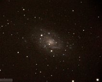

{kind=link}
M82
M82 taken with Celestron 11-inch and the Canon T5i. M82 is the small companion to M81 and their interaction is suggested by radio imagery. It is of type I0 …

{kind=link}
NGC 2403
NGC 2403 taken with the Canon T5i on the Celestron C11. This is a nearby (3 Mpc) type Scd galaxy. It is nearly bulgeless.
{kind=link}
3C 273 - brightest quasar
3C 273, a faint (12.9 mag) dot in the circle, is the brightest quasar in the sky and one of the closest. Distance = 750 Mpc (2.4 billion LY). Type blazar. …
{kind=link}
M51- Whirlpool Galaxy
M51, the Whirlpool Galaxy. This spiral galaxy is unusual in that it is interacting with a dwarf irregular galaxy (NGC 5195) nearby. It is grand design spiral of…
{kind=link}
M101
M101, also known as the Pinwheel Galaxy. This grand-design spiral galaxy is of type Sc.
DSI II CCD on the Meade 80mm apochromatic refractor.
DSI II CCD on the Meade 80mm apochromatic refractor.
{kind=link}
M101
M101 in 2013. Comparison with previous 2011 picture reveals some colorful hot pixels (not to be confused with supernovae).
DSI II CCD, Meade 80mm apochromatic…
DSI II CCD, Meade 80mm apochromatic…
{kind=link}
{kind=link}
M110
M110- a dwarf galaxy that is a satellite of the Andromeda Galaxy.
DSI II CCD, Meade 80mm apochromatic refractor.
DSI II CCD, Meade 80mm apochromatic refractor.
{kind=link}
M82 with supernova
Messier 82 (nearby starburst) taken while there was a supernova going off in 2014. This image is flipped vertically from the true orientation.

M31 center
The center of Sb galaxy M31, the closest bright spiral to the Milky Way. Distance=2.4 MLY. Patchy dust is visible around the nucleus.
{kind=link}
M31
M31 (center) with satellite ellipticals M32 (below) and M110 (above, right). A bit out of focus, but good for showing the dust lanes in M31.
Atik 383L CCD on…
Atik 383L CCD on…
{kind=link}
M31 (Andromeda Galaxy)
Close up of the bulge of M31, the Andromeda galaxy. Taken with the Atik CCD through RGB filters using the Celestron C11. The dust absorption is stronger on the…
{kind=link}
M33
M33 in the constellation Triangulum. N is up and E to left.
Atik 383L CCD on the Meade 80 mm APO. 13 exposures were aligned and combined.
Atik 383L CCD on the Meade 80 mm APO. 13 exposures were aligned and combined.
{kind=link}
M33
M33 in Triangulum. N is up.
Atik 383L CCD on the 80 mm APO. Display adjusted to reveal nucleus but not outer arms.
Atik 383L CCD on the 80 mm APO. Display adjusted to reveal nucleus but not outer arms.
{kind=link}
{kind=link}
M33 (negative)
An color inverted, black and white view of M33. N is up and E to the left. Atik CCD on the 80 mm APO refracter.
{kind=link}
Leo Triplet
The Leo Triplet taken with the Atik CCD on the Meade 12-inch. The triplet includes M65 (top right), M66 (lower right), and NGC 3628 (left). Hot pixels and…
{kind=link}
M31- Andromeda Galaxy
M31, also known as the Andromeda Galaxy. This galaxy is the nearest spiral galaxy to our own, and can be seen with the naked eye in the constellation Andromeda.…
{kind=link}
M66
Messier 66 taken with the Canon T5i on the Celestron C11. This 60 sec exposure is not deep enough to see the full extent of the spiral arms, but the colors are…
{kind=link}
M81 (NGC 3031)
M81 taken with the Canon T5i on Celestron 11-inch. M81 is considered a grand design spiral with Hubble type Sab (unbarred).
{kind=link}
M101- Pinwheel Galaxy
The large spiral galaxy visible in this picture is M101 (type SABc), whereas the smaller galaxy on the left is NGC 5474 (type SAc). These galaxies are in Ursa…
{kind=link}
M101 (close-up)
M101 zoomed in. Note that the supernova from 2011 is no longer visible. (the field of view is rotated, however).
Atik 383L CCD, Meade 80mm apochromatic…
Atik 383L CCD, Meade 80mm apochromatic…
{kind=link}
M105 galaxy group in Leo
Messier 105 (an E1 elliptical) is the galaxy at the top (N) closest to the middle. To the left (E) are NGC 3384 (S0 lenticular galaxy) and NGC 3389 (faint). At…
{kind=link}
NGC 253 in Sculptor
NGC 253, an Sc galaxy in Sculptor. Taken with the Atik CCD through RGB filters on the 11-inch Celestron. N up and E to left.
{kind=link}
NGC 253- Sculptor Galaxy
NGC 253, or the Sculptor Galaxy, is a nearby spiral galaxy of type SABc.
Sum of several exposures taken through the Atik 383L CCD on the 11-inch Celestron.
Sum of several exposures taken through the Atik 383L CCD on the 11-inch Celestron.
{kind=link}
M66 or NGC 3627
M66 is an 8.9th magnitude galaxy in Leo. Part of a group including M65. Taken with the Atik CCD on the 11-inch Celestron. N is up, E to left.
{kind=link}
M104 - Sombrero Galaxy
M104, the Sombrero Galaxy, is an 8th magnitude galaxy in Virgo. It is seen nearly edge-on. The dark dust lane gives it the appearance of a sombrero. This galaxy…
{kind=link}
M63 - the Sunflower Galaxy.
M63, or the Sunflower Galaxy. This 8.6 magnitude spiral galaxy is of type Sbc and resides in Canes Venatici.
Atik 383L CCD with RGB filters taken through the…
Atik 383L CCD with RGB filters taken through the…
{kind=link}
M63 - the Sunflower Galaxy (wide field).
M63, the Sunflower Galaxy (aka NGC 5055) in Canes Venatici. North is up and East to left.
Taken with the Atik 383L CCD through RGB filters on the Meade 12"…
Taken with the Atik 383L CCD through RGB filters on the Meade 12"…
{kind=link}
M104
Messier 104, the Sombrero Galaxy. A nearly edge-on Sa galaxy in the constellation Virgo. It has a prominant dust lane barely visible in this image by the Meade…
{kind=link}
M81 and M82
Black and White version of M81 and M82 cameo. M81 is on the left. Atik 383L CCD on the 80mm APO.
{kind=link}
Messier 66
Messier 66, a barred spiral galaxy in Leo. Taken with the Atik 383L on the Celestron C11. N is up and E left. This is a raw black and white image so many hot…
{kind=link}
{kind=link}